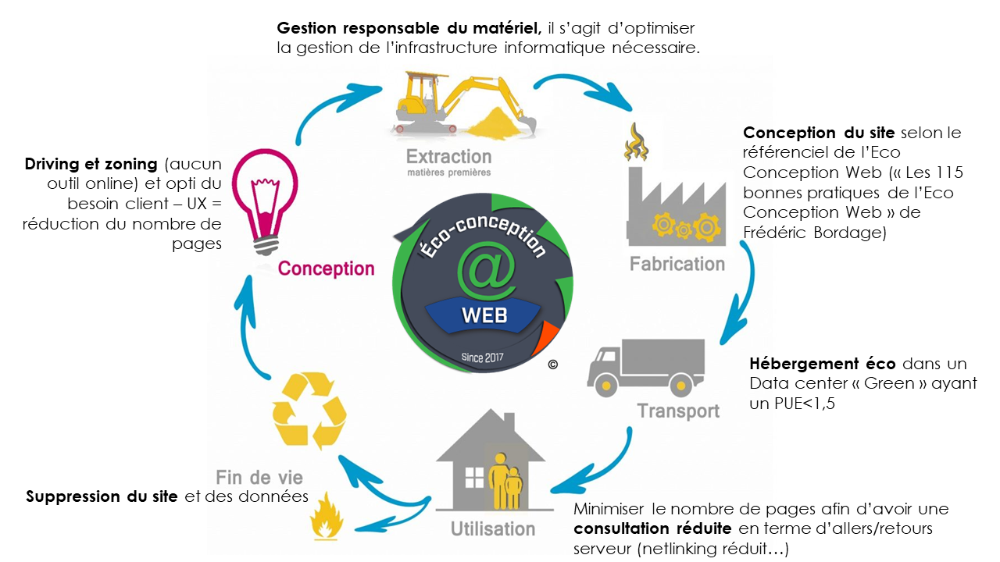

Le web pollue de manière croissante et inquiétante, il faut donc concevoir des sites web plus légers et sollicitant moins d'allers-retours serveur(s).
L’impact environnemental du numérique n’est pas toujours connu, pourtant il est très important.
Pour s’en rendre compte, voici quelques chiffres :
L'Eco-conception c'est l'intégration de la réduction des impacts environnementaux dès la phase de conception d'un service numérique avec une vision globale sur l'ensemble du cycle de vie. Le même service rendu génère moins d'impacts s'il est éco-conçu. En intégrant les dimensions sociale et économique, elle mène à la conception numérique responsable ".
Il faut donc réduire l'impact environnemental du web tout en gagnant en performance.
L’éco-conception se doit intervenir dans chaque étape du cycle d’un produit, et non seulement dans quelques étapes.
Retrouver dans cette vidéo l’explication de l'éco-conception selon une agence qui la pratique lors de toute ses conceptions
Et vous ? Avez-vous déjà réfléchi à l’empreinte écologique de votre site web ?
Dans le numérique, comme dans d’autres secteurs, la tendance est au vert. De plus en plus d’entreprises se mettent à l’éco-conception web et cherchent à trouver le bon compromis entre performance et impact environnemental.
Dans la page suivante, nous passons au crible l’éco-conception web et ses bonnes pratiques.
Découvrez quelles sont les bonnes pratiques, simples à mettre en place, à retenir pour rendre votre site Internet moins gourmand en ressources énergétiques ?
Cliquez ici(lien page bonne pratiques) pour en savoir plus !